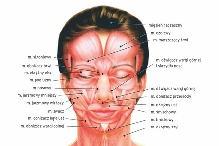

Mięśnie twarzy
Mięśnie mimiczne albo wyrazowe – grupa mięśni głowy. Związane są one z ruchomością skóry i odpowiadają za mruganie, otwieranie lub przesuwanie szpary ust, ruchy policzków, współuczestniczą w wytwarzaniu dźwięków, gwizdaniu czy śpiewie. Zwykle przyczepiają się one do skóry lub błony śluzowej i kurcząc się, poruszają skórę. Niektóre są szczątkowe, np. mięśnie małżowiny usznej, a wszystkie z wyjątkiem mięśnia policzkowego pozbawione są powięzi. Unerwione są przez nerw twarzowy.
Ile jest mięśni twarzy?
Mięśnie głowy obejmują bogatą grupę mięśni mimicznych, mięśni poruszających żuchwą oraz mięśni gałki ocznej, ucha i języka. Na twarzy zlokalizowanych jest około 70 mięśni, które dzielą się na pięć grup mięśniowych. Jedną z nich są mięśnie żucia, do których zaliczamy mięsień żwacz, skroniowy, skrzydłowy boczny oraz skrzydłowy przyśrodkowy. Kolejną grupą mięśni twarzy są mięśnie małżowiny usznej, czyli mięsień uszny przedni, mięsień uszny górny oraz mięsień uszny dolny. W skład mięśni otoczenia nozdrzy wchodzą mięsień nosowy i mięsień obniżacz przegrody nosa.
Mięśnie otaczające szparę ust reprezentowane są przez liczną grupę mięśni. Te zlokalizowane wokół ust mięśnie twarzy to:
- mięsień obniżacz kąta ust
- mięsień obniżacz wargi dolnej
- mięsień śmiechowy
- mięsień bródkowy
- mięsień jarzmowy większy
- mięsień dźwigacz wargi górnej i skrzydła nosa
- mięsień dźwigacz wargi dolnej
- mięsień dźwigacz kąta ust
- mięsień policzkowy
- mięsień okrężny ust
- mięsień jarzmowy większy